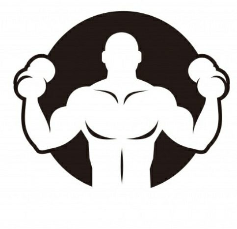
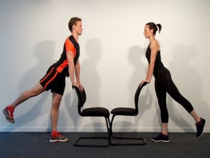

aimer le sport comme vous ne l'avez jamais fait
Vous voulez musclé vos fesses ? envie d’un corps de rêve ?
Levé de jambe en arrière est l’exercice fait pour ça . On a marre des « fesses molles » ? Vous êtes prêt à tout pour
leur donner un peu plus de fermeté, de galbe et de rebond ? Rassurez-vous, la tâche n’est pas si compliquée qu’il
n’y paraît. Un brin de motivation, trois séances à quatre séances d’entrainement par semaine , de bons conseils et
des exercices adaptés c’est tout ce qu’il vous faut pour avoir des fesses au top. Sans plus attendre découvrez un
excellent exercice pour muscler les fessiers.

Application
En position debout,bras sur les hanches , envoyez la jambe droite tendue en arrière et aussi loin que possible .
marquez un temps de pause lorsque vous envoyez la jambe en l’air , cela permets de travailler le muscle plus en
profondeur.
Pensez à garder l’autre jambe et le dos bien droits.
Retournez à la position debout et répétez l’exercice de l’autre côté.
On expire lors de la montée et on inspire de la descente .Vous pouvez le faire contre un mur ou une chaise , les deux conviennent.
Muscles travailler
Cet exercice permets de travailler les trois muscles fessiers pour améliorer le galbe des fesses.
N’oublier de vous hydratez , un peu avant la séance, 10 minutes avant environ, il est bon de boire « au bout d’une
trentaine de minutes par petites gorgées. » Mais là encore, le rythme peut varier d’une personne à l’autre et en
fonction de l’intensité.
L’important est d’avoir sa bouteille à portée de main et de boire par petites gorgées régulièrement en évitant d’attendre d’avoir soif.
Boire avant l’exercice sportif et pendant et après l’exercice vous permets de rester en forme;)